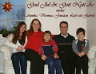
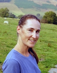

Karin Veronica Gelland
Fil kand, kommunekolog i Solna - naturvård, miljöövervakning och miljöfrågor i stadsplaner.
| Född: | 1964-09-30 Huddinge fs, Huddinge kn (AB). [1] |
|---|
| levde: | 1976 Bröderna Grimms V 27, Bromma, Västerled fs, Stockholms stad. [2] |
|---|
| Vigsel: | 1990-04-14. [3] |
|---|
| Levde: | 1991 Tråsättra 1:844, Otto Bondes v 120, Åkersberga, Österåkers fs, Österåkers kn. [3] |
|---|
| Barn: |
|---|
| Annika Boström (1992 - ) |
| Gabriel Boström (1994 - ) |
| Jonatan Boström (1996 - ) |
Personhistoria
| Årtal | Ålder | Händelse |
|---|
| 1964 |
|
Födelse 1964-09-30 Huddinge fs, Huddinge kn (AB) [1] |
| 1976 |
|
levde 1976 Bröderna Grimms V 27, Bromma, Västerled fs, Stockholms stad [2] |
| 1990 |
25 år |
Vigsel Leif Arne Boström 1990-04-14 [3] |
| 1991 |
|
Levde Leif Arne Boström 1991 Tråsättra 1:844, Otto Bondes v 120, Åkersberga, Österåkers fs, Österåkers kn [3] |
| 1992 |
|
Dottern Annika Boström föds 1992 |
| 1994 |
|
Sonen Gabriel Boström föds 1994 |
| 1996 |
|
Sonen Jonatan Boström föds 1996 |
Dokument
Källor
| [1] | Mtl Sveriges befolkning 1971 |
| |
| | |
| [2] | Mtl Sveriges befolkning 1975 |
| |
| | |
| [3] | Mantalslängd 1991, Stockholms län |
| |
|
|
| 2013. Veronica Boström |
| |
|
| 2012. Leif och Veronica Boström |
| |
|  |
| 2006. Julhälsningar från familjen Boström i Täby |
| |
|  |
| 2006. Veronica Boström f.Gelland |
|
{kind=link}
{kind=link}
{kind=link}
{kind=link}